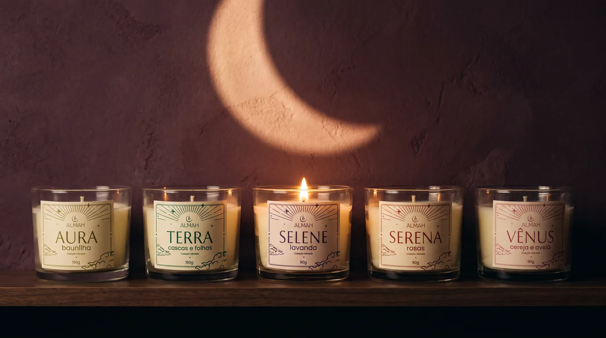
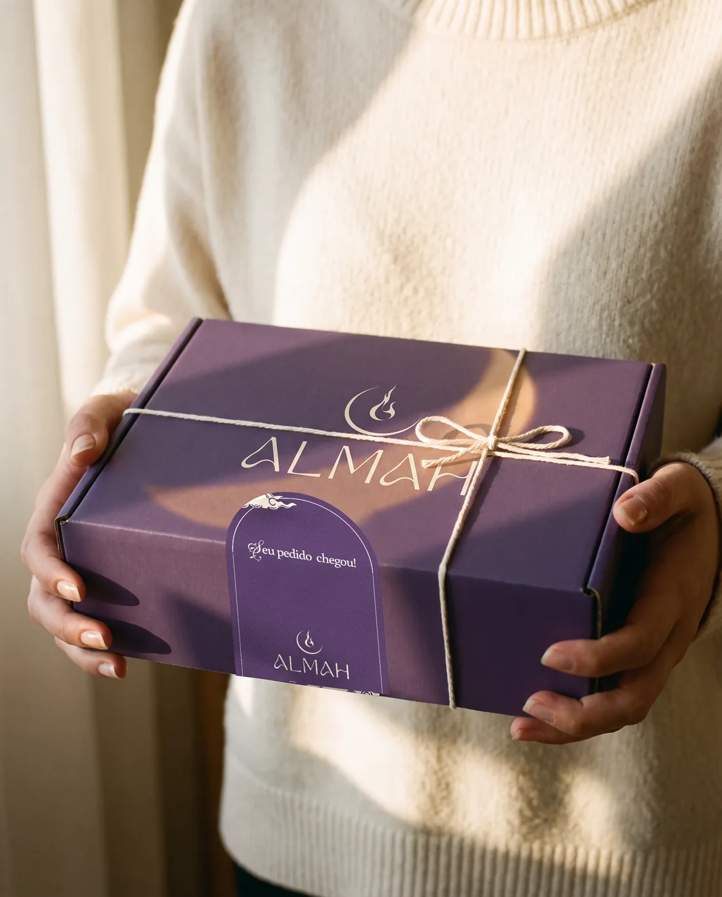
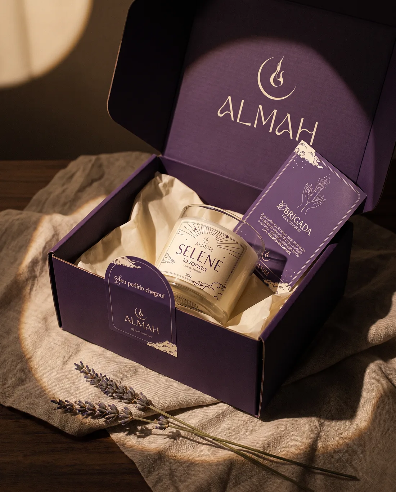
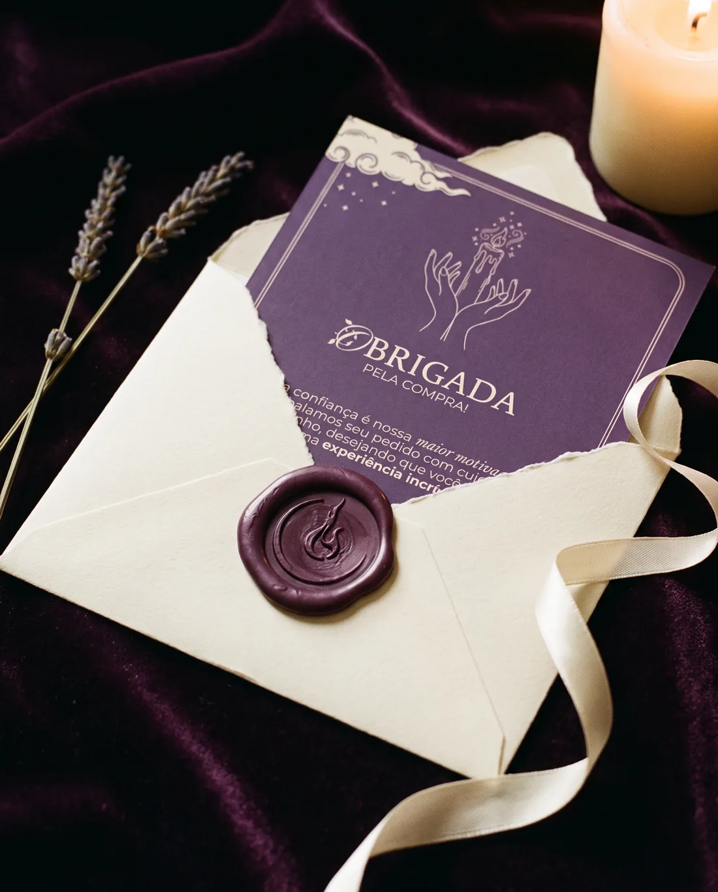
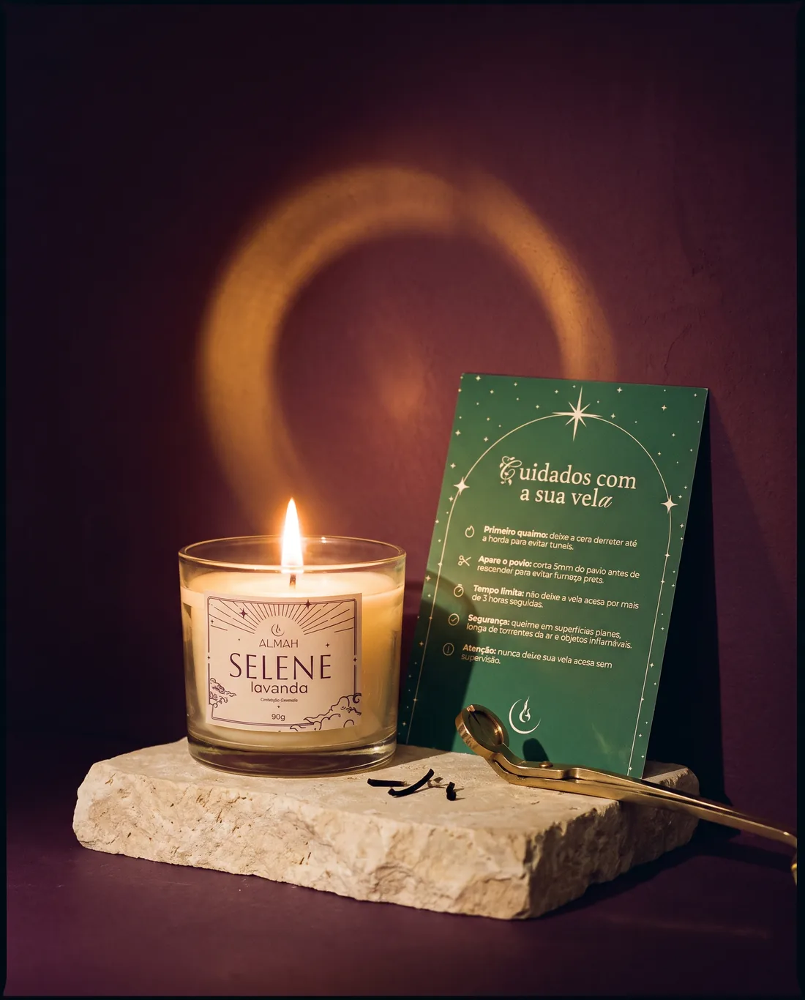
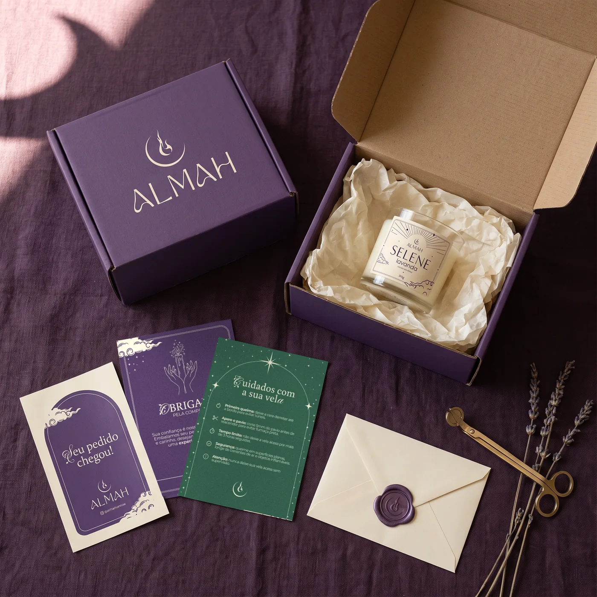

Acender uma vela é um pequeno ritual. A chama marca o fim do dia, o começo do descanso, a hora de cuidar de si. A Almah faz velas à mão para esse momento: cera, aroma e luz pensados para deixar a casa mais calma e a noite mais bonita.
Feito à mão, com carinho, para você.
O símbolo
A lua guarda a chama
Duas imagens antigas, desenhadas numa só: a noite que acolhe e a luz que se acende nela.
Lua crescenteOs ciclos, a noite, o descanso. Abraça o desenho por baixo.+
ChamaA luz que se acende de propósito: o ritual da vela.=
AlmahUma luz que nasce dentro da lua.
Desenhado à mão, no papel, e depois redesenhado em vetor.Logo por Cauã Dorn
Coleção Gênesis
Cinco velas, cinco céus
Cada vela tem um nome, um aroma e uma cor. Toque numa vela da prateleira ou vire uma carta para conhecê-la.

Toque numa carta para virar · toque de novo para desvirar
Seu pedido chegou
Abrir uma Almah
Da porta de casa ao primeiro acender, em cinco tempos.

I
Chegou
A caixa roxo-profundo chega amarrada e fechada com o adesivo "Seu pedido chegou!".

II
Abrir
Dentro da tampa, o logo de novo. Papel de seda, a vela e o card de agradecimento.

III
O bilhete
"Obrigada pela compra", num envelope lacrado em cera com o símbolo.

IV
Cuidar
O card de cuidados acompanha cada vela:
Primeira queima: deixe a cera derreter até a borda.
Apare o pavio em 5 mm antes de reacender.
No máximo 3 horas acesa de cada vez.
Superfície plana, longe de vento e de coisas que queimam.
Nunca deixe a vela acesa sem ninguém por perto.

V
Tudo junto
A caixa, a vela, os cards, o adesivo e o lacre. A mesma noite em cada peça.
Crie a sua
Dê nome a uma vela
Escreva um nome e um aroma, escolha a cor e veja o rótulo da Coleção Gênesis montado na hora.
SELENE
lavanda
Coleção Gênesis
150g
A marca em uma olhada
Roxo profundo, sempre
Logo principal · roxo profundo e creme
Toque numa cor para copiar o código.
Aboreto · Buenard · Poppins
Aura Terra
Cuidados com a sua vela
Poppins Light no texto, Buenard nas frases, Fleur De Leah só na primeira letra.
O filme
Trinta segundos de chama
Baunilha, lavanda, cereja e avelã, um fósforo e a frase da marca sobre a chama. O filme de lançamento da Coleção Gênesis.